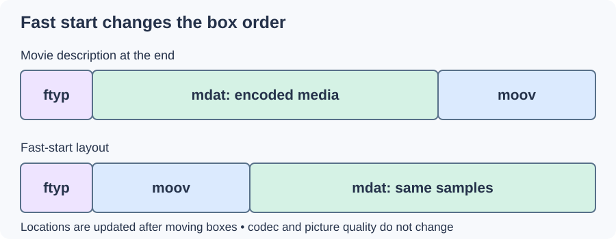

MP4 Fast Start
MP4 fast start places the movie description before the bulk media data so a sequential reader can initialize playback earlier.
A reader receiving an MP4 from beginning to end needs the movie description before it can interpret its samples. Fast start places that description ahead of the bulk media data.
A conventional writer may finish its moov box after writing mdat, because only then are all the sample locations and timing known. The resulting file is complete and usable for readers that can seek to the description, but a sequential reader encounters the payload first.

Simplified before/after layouts. Box widths are not file-size proportions.
What actually moves?
Suppose an illustrative layout has 24 bytes of file-type information followed by an eight-byte mdat header. The first media sample begins at byte 32, and a completed moov of 100,000 bytes sits after the media.
Move that moov between the file-type box and mdat, keeping the other relevant sizes unchanged. The first sample now starts at byte 100,032. A later chunk previously at byte 1,050,032 moves to 1,150,032. The sample bytes themselves are the same.
The chunk-location tables must be rewritten to reference the new addresses. Moving a block of metadata without updating its stored offsets would give the reader a valid-looking table that points at the wrong bytes.
| Changed by this operation | Retained by this operation |
|---|---|
| moov placement and affected chunk offsets | The coded media samples |
| The order in which a sequential reader encounters setup | The codec's picture/sound representation |
Actual rewriting can also need larger offset fields or layout adjustments. The numerical example isolates the relocation mechanism rather than prescribing every writer's result.
Sequential transfer and byte-range access
For a purely sequential transfer of a 250 MB file at 5 MB/s, trailing setup could remain unavailable until roughly 50 seconds of data has been received. In the simplified early-moov layout, reading 100 kB at that rate takes roughly 0.02 seconds; codec setup, required media, and request latency still add startup work.
A byte-range-capable reader can instead fetch the trailing description directly and then request the needed media. It need not transfer the 250 MB prefix to reach moov. Fast-start placement therefore changes one access pattern more than another.
For an Emby session, establish whether the app receives this original file layout or a repackaged output. Fragmented delivery supplies initialization and successive sample descriptions through its own arrangement.
The useful result of fast start is earlier availability of the instructions for reading the movie. Its offsets and encoded samples explain that result; no new picture encoding is required.